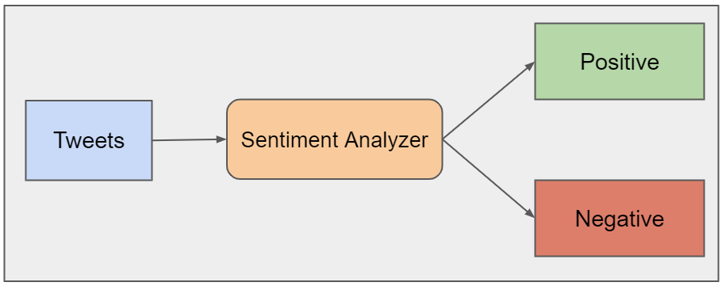

RAGLLMFAISS
AI Research Assistant (RAG over arXiv Papers)
GPU-accelerated retrieval-augmented generation system that ingests arXiv papers and returns grounded answers with source citations.
View ProjectThese projects highlight end-to-end problem solving — from data preparation and modeling to APIs, visualization, and production-style presentation.
GPU-accelerated retrieval-augmented generation system that ingests arXiv papers and returns grounded answers with source citations.
View Project
Speech-command classification pipeline using MFCC-based feature extraction, deep learning, and API-based prediction serving.
View Project
Large-scale NLP workflow that classifies sentiment in 1.6 million tweets using text cleaning, embeddings, and neural networks.
View Project
Healthcare fraud detection workflow combining multi-source claim data, exploratory analysis, dimensionality reduction, and classification.
View Project